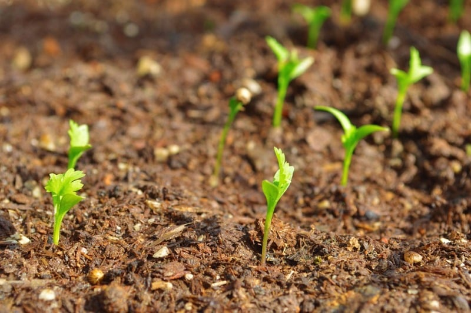
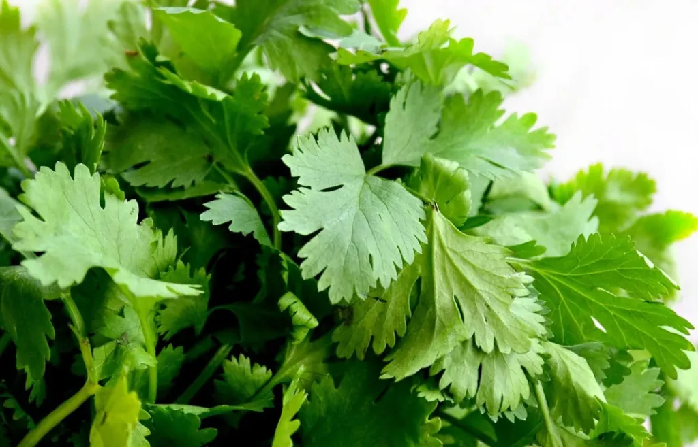
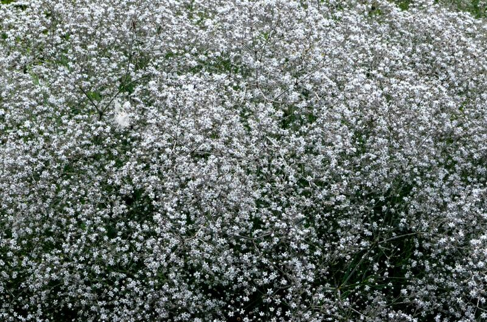
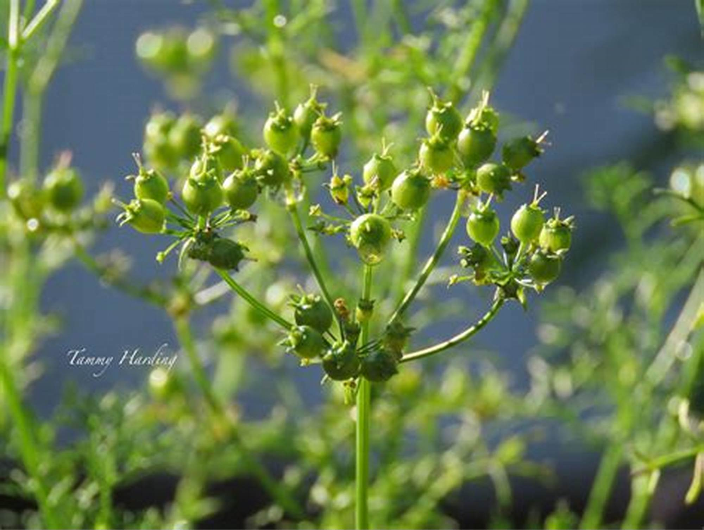
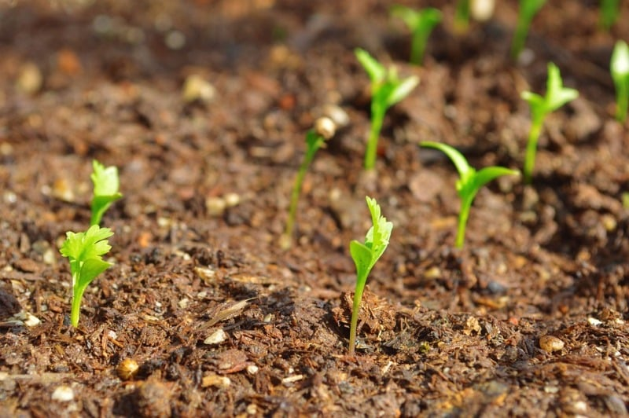
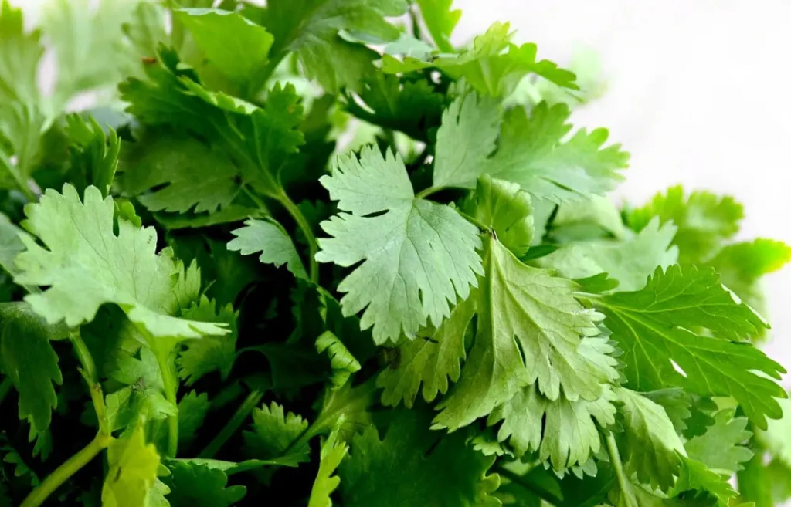
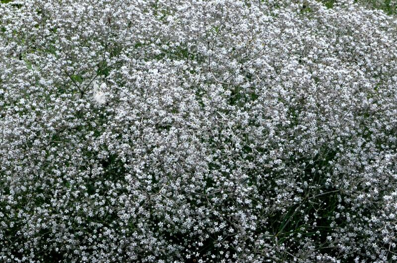
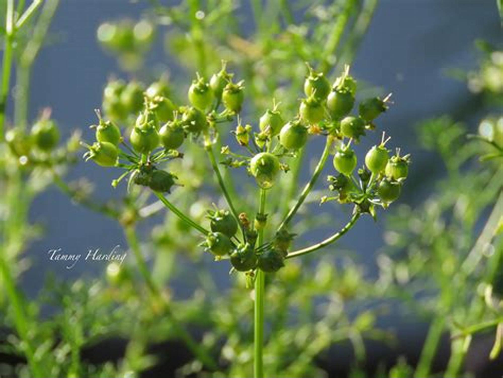

धनिया की खेती और रोग रोकथाम
 







धनिया की खेती हरी पत्तियों के प्रयोग हेतु लगभग पूरे वर्ष की जाती है लेकिन बीज प्राप्त करने हेतु इसकी खेती रबी की फसल के साथ में करते है इसके लिए स्प्रिंग सीजन अच्छा रहता है। धनिया की खेती हेतु दोमट मिट्टी सर्वोत्तम होती है
अच्छे जीवांशयुक्त भारी भूमि में भी उगाई जा सकती है लेकिन जल निकास होना अति आवश्यक है।
धनिया खेत की तैयारी
खेत की तैयारी के लिए खेत की पहली जुताई मिट्टी पलटने वाले हल से तथा बाद में तीन से चार जुताई कल्टीवेटर या देशी हल से करते है
खेत को समतल करके पाटा लगाकर भुरभुरा बना लेना चाहिए।
आख़री जुताई में 100 से 120 कुन्तल सड़ी गोबर की खाद को मिला देना चाहिए।
धनिया की बीज बुवाई
बीज की मात्रा बुवाई एवं सिंचाई की दशा पर निर्भर करती है। सिंचित दशा में बीज 12 से 15 किलोग्राम प्रति हेक्टेयर तथा असिंचित दशा में 25 से 30 किलोग्राम प्रति हेक्टेयर पड़ता है।
बीज को 3 ग्राम थीरम या 2 ग्राम बेविस्टीन से प्रति किलोग्राम के हिसाब से बुवाई करने से पहले शोधित कर लेना चाहिए
बीज को बोने से पहले 12 घंटे पानी में भिगोकर बुवाई करनी चाहिए।
धनिया की बुवाई कब करनी चाहिए
मैदानी क्षेत्रो में अक्टूबर से नवम्बर में बुवाई की जाती है।
विधि में बुवाई लाइन से लाइन की दूरी 20 से 30 सेंटीमीटर तथा पौधे से पौधे की दूरी 10 से 15 सेंटीमीटर रखते हुए 3 से 5 सेंटीमीटर गहराई पर बुवाई करनी चाहिए।
खाद एवं उर्वरको की मात्रा
खेत की तैयारी करते समय 100 से 120 कुंतल गोबर की सड़ी खाद आख़िरी जुताई में मिला देना चाहिए।
इसके साथ ही 60 किलोग्राम नत्रजन, 40 किलोग्राम फास्फोरस तथा 40 किलोग्राम पोटाश तत्व के रूप प्रति हेक्टेयर देना चाहिए।
नत्रजन की आधी मात्रा एवं फास्फोरस तथा पोटाश की पूरी मात्रा खेत की तैयारी करते समय आख़िरी जुताई में बेसल ड्रेसिंग में देना चाहिए।
नत्रजन की शेष मात्रा का 1/2 भाग 25 दिन बाद बुवाई के तथा 1/2 भाग 40 दिन बाद बुवाई के बाद देना चाहिए।
धनिया की फसल में सिंचाई कब करनी चाहिए
पूरी फसल में 4 - 5 सिंचाई की आवश्यकता पड़ती है। पहली सिंचाई बुवाई के 30 से 35 दिन बाद करनी चाहिए।
दूसरी 60 से 70 दिन, तीसरी 80 से 90 दिन, चौथी 100 से 105 दिन एवं पांचवी 120 दिन बाद करनी चाहिए।
खरपतवार पर नियंत्रण
पहली सिंचाई के बाद निराई-गुड़ाई करना चाहिए दूसरी पहली के 30 दिन बाद करना चाहिए। खरपतवार नियंत्रण हेतु बुवाई के तुरंत बाद एक
दो दिन के अंदर 3.3 लीटर पेंडीमेथालीन को 800 से 1000 लीटर पानी में मिलाकर प्रति हेक्टेयर की दर से छिड़काव करना चाहिए।
धनिया की खेती में रोग प्रबंधन
धनिया में पाउडरी मिल्ड्यू, उकठा या विल्ट तथा तना पिटका रोग लगते है।
इनको रोकने के लिए 0.3 प्रतिशत जल ग्राही सल्फर अथवा 0.06 प्रतिशत कैराथीन के घोल का छिड़काव करना चाहिए
तथा अवरोधी प्रजातियों का प्रयोग करना चाहिए इसके साथ ही फसल चक्र भी अपनाना चाहिए।
धनिया की खेती में कीट प्रबंधन
धनिया में माहू या एफिड तथा पत्ती खाने वाले कीट लगते है इनको नियंत्रण करने हेतु 0.2 प्रतिशत कार्बेरिल घोल का छिड़काव करना चाहिए
जिससे इन कीटो का असर न हो सके।
धनिया की फसल कटाई
हरी पत्तियो को बड़ी सावधानी से तुड़ाई करनी चाहिए जिससे कि तना सुरक्षित रहे एस तरह दो बार पत्तियां तोड़नी चाहिए
लेकिन कभी-कभी पूरा पौधा भी हरी पत्तियो के प्रयोग में लाते है बीज प्राप्त करने हेतु जब पौधे पर बीज पककर सूख जावे तभी कटाई की जाती है
और एक दो दिन खेत में डालकर सुखाने के बाद बीज की पिटाई करके अलग कर लिया जाता है।